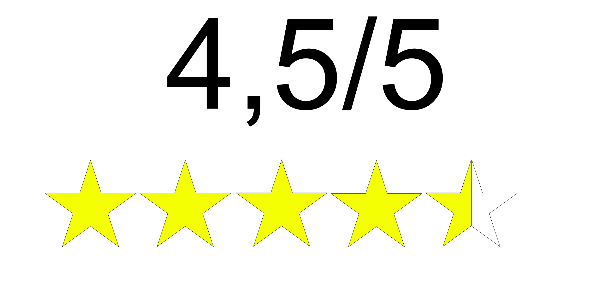

Hru jsem poprvé spatřil u Britskéhu youtubera Real Civil Engineer, který ji hrál v roce 2021 já jsem si hru koupil na koci roku 2023. hru jsem si oblíbil bohužel jsem jí jestě nedohrál, z toho důvodu že jsem se zasekl na jedné hádance a nedokážu se dostat dál i s nápovědou na youtube. hra není akční což mi moc nevadí je spíše zaměřená ná průzkum a nachází se v ní spousta hádanek
